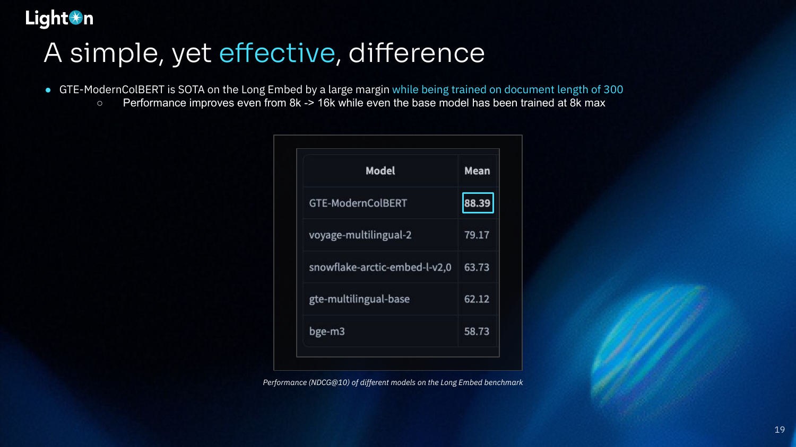

P4 - Late Interaction Models For RAG
As part of our LLM Evals course, I hosted Antoine Chaffin, a researcher at LightOn, for the fourth part of our 5-part mini-series on evaluating and optimizing RAG. Antoine is a research engineer who has contributed to impactful open-source tools like ModernBERT and PyLate, a library for working with late-interaction models.
His talk explains the intrinsic limitations of single-vector search, such as information loss from pooling, and introduces late interaction models as a more powerful alternative for modern RAG use cases like out-of-domain generalization and long context retrieval.
Below is an annotated version of the presentation, with timestamped links for each slide.
We are teaching our last and final cohort of our AI Evals course next month (we have to get back to building). Here is a 35% discount code for readers of this post.
Annotated Presentation
The title slide for Antoine’s talk, “Going Further: Late Interaction Beats Single Vector Limits.”
Antoine introduces himself, highlighting his background as an R&D engineer at LightOn with a Ph.D. in multimodal misinformation detection. His work focuses on information retrieval, especially with encoders and late interaction models, which led to his co-creation of ModernBERT and the PyLate library. He also mentions his work on OCR-free RAG pipelines and his active presence on Twitter, where he discusses these topics.

This slide diagrams the standard architecture for dense (single) vector search. A query and a document are separately fed through an encoder model (like BERT) to generate contextualized vector representations for each token. A pooling operation (e.g., max, mean,[CLS] token, etc.) then compresses all these token vectors into a single vector for the query and a single vector for the document. Finally, a similarity score (typically cosine similarity) is computed between these two vectors to determine relevance. The information loss in the pooling step is a key limitation of this approach.
Dense vector search has become the standard for RAG pipelines for several reasons. It offers strong out-of-the-box performance, and a vast number of pre-trained models are available on platforms like the Hugging Face Hub, catering to different sizes, languages, and domains. Furthermore, these models are easy to deploy using the growing ecosystem of vector databases and serving APIs.
Performance evaluation is crucial for selecting the right model. The MTEB (Massive Text Embedding Benchmark) leaderboard is a valuable resource that centralizes results from various benchmarks, allowing practitioners to compare models and choose one that fits their budget and domain requirements.
Antoine uses the BEIR benchmark as an example of Goodhart’s Law in action. BEIR was introduced to evaluate the out-of-domain generalization of retrieval models. However, as it became the standard benchmark to beat, models began to overfit to its specific datasets. Consequently, top-performing models on the BEIR leaderboard may not generalize well to new, unseen use cases, underscoring the importance of running your own evaluations on your specific data.
Antoine argues that if you cannot measure a capability, you cannot improve it. Existing benchmarks often miss important aspects of model performance. For instance, most older models were evaluated with a context window of only 512 tokens. While many newer models claim to support 8k tokens, recent evaluations have shown that their performance degrades significantly beyond 4k, a limitation that was not captured by older benchmarks.
This table from the LongEmbed paper illustrates the performance of various embedding models on long-context retrieval tasks. It shows that extending models with techniques like SelfExtend or NTK can significantly improve their ability to handle long contexts, with the E5-Mistral + NTK model achieving the highest average score.
Retrieval goes beyond simple keyword or semantic matching. Modern RAG systems require more complex, reasoning-based retrieval. For example, a query asking for a different Snowflake function than UNPIVOT requires understanding the function’s purpose, not just matching keywords. Similarly, a math question might require retrieving a document that uses the same theorem, even if the numbers are different. These tasks are challenging for current models.
This table shows the performance of various retrieval models on the BRIGHT benchmark, which is designed for reasoning-intensive tasks. The results show that even large, powerful models struggle, with the best model achieving an average nDCG@10 of only 24.3. This highlights the difficulty of reasoning-based retrieval for current systems.
Interestingly, BM25, a simple lexical search method that does not use deep learning, performs surprisingly well on these more challenging long-context and reasoning-intensive benchmarks. Its strength lies in its lack of compression; by matching exact keywords, it avoids the information loss that plagues dense models, making it a robust baseline for out-of-domain tasks.
Pooling is the core flaw of dense models. The process of compressing all the token vectors from a document into a single vector is inherently lossy. This compression forces the model to be selective about what information it retains.
This slide illustrates how dense models learn selective information encoding. If a model is trained on a movie review dataset where queries are mostly about actors, it will learn to prioritize and encode information about actors while discarding details about the plot, music, or themes. This selective behavior leads to poor performance on out-of-domain queries (e.g., asking about the plot) or when applied to new domains entirely (e.g., cooking recipes), where the learned notion of similarity is no longer relevant.
BM25 is effective in certain cases because it avoids pooling and compression, relying on exact keyword matching. In the example, “Leonardo DiCaprio disaster” in the query directly matches the terms in the document. However, this approach fails when there’s no direct lexical overlap, such as with synonyms or different languages.
Late interaction models offer a solution by replacing the pooling step. Instead of compressing token vectors into a single one, they keep all the token-level information. A token-level similarity operator, such as MaxSim, is then used to compute the final score. MaxSim works by finding the maximum similarity between each query token and all document tokens, then summing these maximum scores.
This meme challenges the idea that using a bigger single vector can solve the information compression problem. While a larger vector can hold more information, it doesn’t address the fundamental issue of conflicting signals when multiple distinct concepts are forced into one representation.
This slide provides a clear comparison between dense and late-interaction models. A dense model forces different concepts (e.g., actors and plot) into a single, conflicted representation. In contrast, a late-interaction model maintains separate token-level representations. The MaxSim operator can then match a query about actors to the specific actor tokens and a query about the plot to the plot tokens, resulting in clean, uninterrupted signals for each aspect of the document.
Late-interaction models like ColBERT have demonstrated strong out-of-domain performance, even outperforming in-domain dense models. Antoine emphasizes that because “out-of-domain” is hard to define, the best approach is to test these models on your own specific data to see the benefits.

The GTE-ModernColBERT model, which uses late interaction, achieves state-of-the-art results on the LongEmbed benchmark. Notably, it outperforms other models by a large margin, even though it was trained on documents with a maximum length of only 300 tokens, while the base models it’s compared against were trained with an 8k context window. This highlights its impressive generalization capabilities for long-context retrieval.
On the reasoning-intensive BRIGHT benchmark, the 150M-parameter Reason-ModernColBERT outperforms all 7B-parameter models (which are 45 times larger). It is even competitive with the proprietary ReasonIR-8B model, which was trained on the same data. This demonstrates the power of the late-interaction architecture for complex retrieval tasks.
This slide provides a direct, apples-to-apples comparison on the BRIGHT benchmark. A late-interaction model achieves a mean score of 19.61, while a dense (single vector) model with the same backbone and training data scores only 12.31. This significant gap underscores the effectiveness of late interaction for challenging, reasoning-intensive retrieval.
Interpretability is a valuable bonus of late-interaction models like ColBERT. Because the MaxSim operator performs granular, token-level matching, it’s possible to see exactly which parts of a document contributed to the match. This allows you to identify the specific sub-chunk of text that is most relevant, which is useful for debugging and for providing more precise context to an LLM in a RAG pipeline.
Despite their advantages, dense models are still mainstream. Antoine attributes this to three main factors:
- Storing cost: Storing n token vectors instead of one is more expensive, though techniques like quantization and footprint reduction are making this more manageable.
- VectorDB support: Initially, most vector databases did not support the different search mechanism required by late-interaction models. However, this is changing, with major providers like Vespa, Weaviate, and LanceDB now offering support.
- Lack of accessible tools: The widespread availability of libraries like Sentence Transformers made it very easy to work with dense models.
To address the lack of accessible tools, Antoine and his collaborators created PyLate, a library that extends the popular Sentence Transformers framework for multi-vector models. Since late interaction is essentially a dense model without pooling and with a MaxSim operator, PyLate can leverage the existing Sentence Transformers ecosystem. This allows for efficient, monitorable training (multi-GPU, FP/BF16, W&B) and support for all base models.
PyLate is well-integrated with the Hugging Face ecosystem. This allows for easy sharing of models on the Hub and includes features like automatic model card creation, making it simple to document and distribute your trained late-interaction models.
The syntax for training models with PyLate is designed to be very similar to Sentence Transformers. This familiarity makes it easy for developers to adapt their existing boilerplates and workflows. The example code shows how to define a model, load a dataset, configure training arguments, and start training with just a few modifications to a standard Sentence Transformers script.
PyLate is not just for training; it also provides tools for evaluation. It includes a built-in, efficient index based on PLAID for fast retrieval. It also has helper functions that use the ranx library to easily compute standard IR metrics (like NDCG and Recall) on the retrieval output. The system is compatible with standard data formats (e.g., MTEB, BEIR), so you can evaluate on existing benchmarks or your own data.
One future research avenue is to reduce the storage cost of multi-vector models. Techniques like hierarchical pooling and quantization are being explored to find the optimal trade-off between index size and performance. The goal is to make the footprint of multi-vector indexes comparable to that of single-vector representations without sacrificing much performance.
Another promising direction is applying late interaction to other modalities beyond text. Approaches like ColPali have already used ColBERT for OCR-free RAG with text and images. The diagram shows the CLaMR model, which uses late interaction for multimodal content retrieval across video, audio, OCR, and metadata, consistently outperforming single-vector approaches.
The final future avenue is to develop better similarity functions. While the MaxSim operator is effective and has nice properties, it is relatively naive. Research into learnable late interaction functions, as shown in the paper “Efficient Document Ranking with Learnable Late Interactions” from Google, presents an opportunity to further improve the performance of these models.
Antoine concludes by summarizing the key takeaways. Late interaction models overcome the intrinsic limitations of single-vector search and are well-suited for modern, real-world use cases (out-of-domain, long context, reasoning-intensive). With growing ecosystem support and tools like PyLate, it’s easier than ever to experiment with these models. He encourages the audience to try existing models on their own data and to train their own specialized models using the provided resources.
Q&A Session
(25:52) Why aren’t late-interaction models mainstream yet, given their advantages? Antoine believes it’s still early days. The tools and VectorDB support have only recently matured. It takes time for new technologies to be adopted, especially when it requires changes to production systems. He notes that many use cases don’t require scaling to millions of documents, and for those that do, modern indexes make it feasible. As more models become available for different languages and domains, he expects adoption to grow. Regarding latency, while late-interaction might be slightly slower, the performance gains often outweigh the minor latency increase, which is often not the bottleneck in complex RAG pipelines.
(31:04) If you fine-tune both a dense vector model and a late-interaction model on the same in-domain data, does the performance gap still hold? Yes, the performance gap still exists, even in-domain. Antoine points to the comparison on the BRIGHT benchmark, where a late-interaction model significantly outperformed a single-vector model with the same backbone and training data. He also suggests that fine-tuning a late-interaction model is easier and more stable because there’s less risk of the model’s knowledge “collapsing” onto the new training distribution, as the updates are more granular.
(33:20) How easy is it to get started and fine-tune with PyLate? Are there any tips? It’s very straightforward, especially for those familiar with Sentence Transformers. The boilerplate code is nearly identical. Antoine recommends using the in-training evaluation feature to monitor performance, which is particularly helpful when sweeping hyperparameters. He also mentioned that the training process is generally more stable and converges faster than with single-vector models. The PyLate documentation and repository contain boilerplates and more detailed guidance.
(34:22) What are some common mistakes or points of confusion for people moving from single-vector to late-interaction models? Antoine hasn’t seen many major pitfalls. He says if you can train a single-vector model, you can train a late-interaction model with PyLate. The common advice still applies: tune the temperature for contrastive loss, use a large batch size, etc. The documentation covers most of these common issues, and he encourages users to open issues or reach out on Twitter for help.
We are teaching our last and final cohort of our AI Evals course next month (we have to get back to building). Here is a 35% discount code for readers of this post.
Video
Here is the full video: